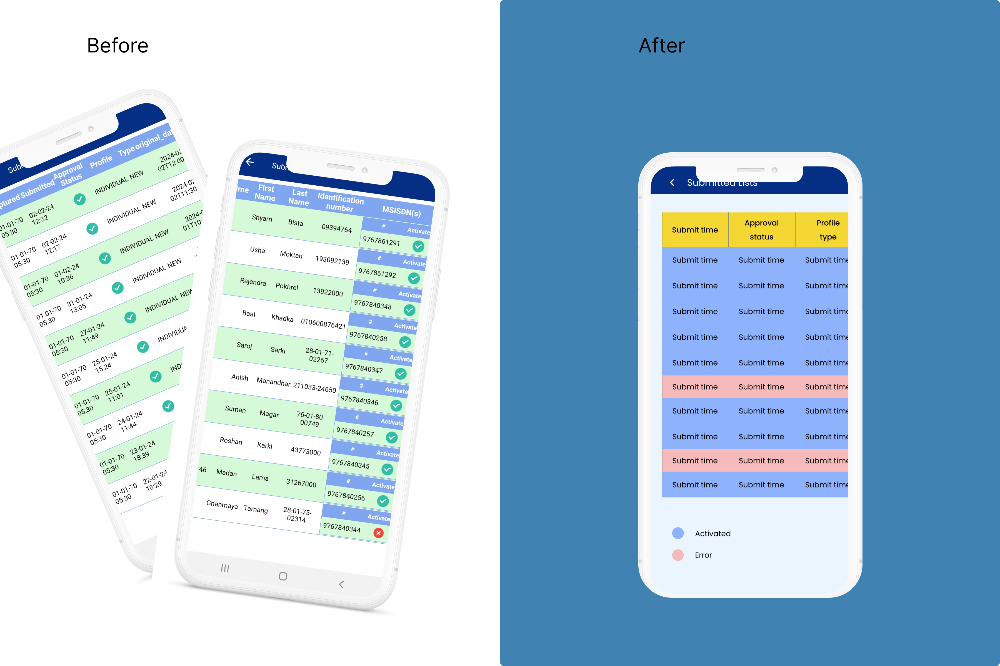
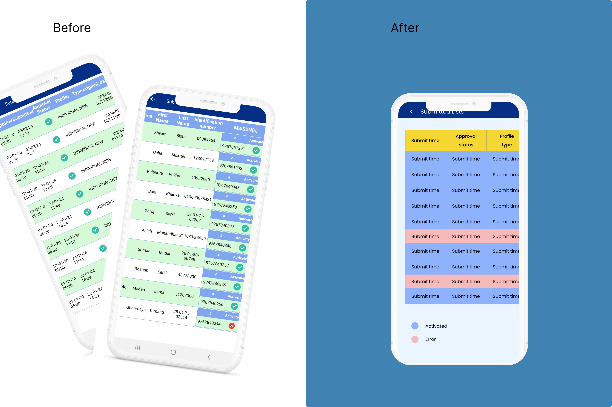

Design Process:

I found the Face 2 Face NTC SIM activation app's user experience wasnt as good as Ncell's app which i was already familier with. So, I decided to redesign some unsatisfied part of th app to improve its usability. It took me one week to complete the work.
The primary Objective of the project was to redesign the face 2 face app to improve user satisfaction and streamline the activation process. This will make both the seller and buyer's overall experience efficient.
To start, redesign of the app, it was essential to gather insights and feedback from individual who regularly interacted with the original app
I conducted user research by directly engaging with family members who use the orignal app regularly.
participation included myself,my father and my two uncles, all of whom are shop owners and frequent user of the face 2 face app. .
In addition to gathering feedback on the existing app,inspiration was drawn from the Ncell app whic I used at very first time and knew how to use it pretty well as compare to NTC.By comparing the two apps, I got some rought idea what I should do and valuable insights to inform the redesign of the NTC app.
I conducted usability testing by comparing the original app with my redesign version with my family members as mention above including myself,who use the app on daily basis. As a regular user of the original app, my feedbacks along with theirs provided valuable insights for the redesign process.Some improvements:


 

During this project,I learned the importance of understanding user needs and preferences, iteratively refining based on user input helped enhance usability, highlighting the feedback and implementing it.